Next: Cross, Split
Up: Fluid Section Types: Gases
Previous: Branch, Joint
Contents
Properties: adiabatic, not isentropic, directional, inlet based restrictor
In a split the flow from a gas pipe is split and redirected
through two other pipes. So in principal three network elements of type GAS PIPE
have one node in common in a split. The fluid elements of type BRANCH SPLIT represent the
extra energy loss due to the splitting of the flow and have to be inserted in
the outward branches of the split. This is represented schematically in
Figure 105. The filled circles represent end nodes of the fluid
elements, the others are the midside nodes. For a split to work properly the
flow direction must be as indicated in Figure 105. If the
solution of the equation system indicates that this is not the case
appropriate measures must be taken. For instance, if the solution reveals that
there are two inward flows and one outward flow, branch joint elements must be selected.
Figure 105:
Element selection for a split
| 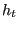 |
Several types of geometry are available.
A branch split of type GE [78], Figure 106, is quite general and allows
arbitrary cross sections and angles (within reasonable limits). It
is characterized by the following constants (to be specified in that order on
the line beneath the *FLUID SECTION, TYPE=BRANCH SPLIT
GE card):
- label of the gas pipe element defined as branch 0.
- label of the gas pipe element defined as branch 1.
- label of the gas pipe element defined as branch 2.
- cross section
 of branch 0.
of branch 0.
- cross section
 of branch 1.
of branch 1.
- cross section
 of branch 2.
of branch 2.
- angle
 (
( ).
).
- angle
 ().
().
- oil mass flow in branch 1 (only if the OIL parameter is used to define
the kind of oil in the *FLUID SECTION card)
- oil mass flow in branch 2 (only if the OIL parameter is used to define
the kind of oil in the *FLUID SECTION card)
- not used (internally: oil material number)
Figure 106:
Geometry of a split fluid section type GE
| 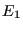 |
A branch split of type Idelchik1, Figure 107, can be used if the incoming branch
is continued in a straight way and does not change its cross section [33]. It
is characterized by the following constants (to be specified in that order on
the line beneath the *FLUID SECTION, TYPE=BRANCH SPLIT
IDELCHIK1 card):
- label of the gas pipe element defined as branch 0.
- label of the gas pipe element defined as branch 1.
- label of the gas pipe element defined as branch 2.
- cross section of branch 0.
- cross section 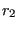 of branch 0.
- cross section of branch 2.
- angle
 .
.
- angle ().
- hydraulic diameter
 of .
of .
- hydraulic diameter 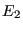 of .
- oil mass flow in branch 1 (only if the OIL parameter is used to define
the kind of oil in the *FLUID SECTION card)
- oil mass flow in branch 2 (only if the OIL parameter is used to define
the kind of oil in the *FLUID SECTION card)
 -correction factor 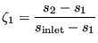 for branch 1 (
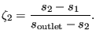). This allows to tune the value with experimental evidence
(default is 1).
-correction factor 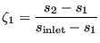 for branch 1 (
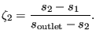). This allows to tune the value with experimental evidence
(default is 1).
- -correction factor for branch 2 (
). This allows to tune the value with experimental evidence (default is 1).
- not used (internally: oil material number)
Figure 107:
Geometry of a split fluid section type Idelchik 1
| 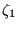 |
A branch split of type Idelchik2, Figure 108, is used if the
outward branches make an angle of  with the incoming branch [33]. It
is characterized by the following constants (to be specified in that order on
the line beneath the *FLUID SECTION, TYPE=BRANCH SPLIT
IDELCHIK2 card):
with the incoming branch [33]. It
is characterized by the following constants (to be specified in that order on
the line beneath the *FLUID SECTION, TYPE=BRANCH SPLIT
IDELCHIK2 card):
- label of the gas pipe element defined as branch 0.
- label of the gas pipe element defined as branch 1.
- label of the gas pipe element defined as branch 2.
- cross section of branch 0.
- cross section of branch 1.
- cross section of branch 2.
- angle
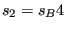.
- angle
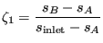.
- oil mass flow in branch 1 (only if the OIL parameter is used to define
the kind of oil in the *FLUID SECTION card)
- oil mass flow in branch 2 (only if the OIL parameter is used to define
the kind of oil in the *FLUID SECTION card)
- -correction factor for branch 1 (
). This allows to tune the value with experimental evidence (default is 1).
- -correction factor for branch 2 (
). This allows to tune the value with experimental evidence (default is 1).
- not used (internally: oil material number)
Figure 108:
Geometry of a split fluid section type Idelchik 2
| 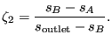 |
By specifying the parameter LIQUID on the *FLUID SECTION card the loss is
calculated for liquids. In the absence of this parameter, compressible losses
are calculated.
Example files: branchsplit1, branchsplit2, branchsplit3.
Next: Cross, Split
Up: Fluid Section Types: Gases
Previous: Branch, Joint
Contents
guido dhondt
2018-12-15